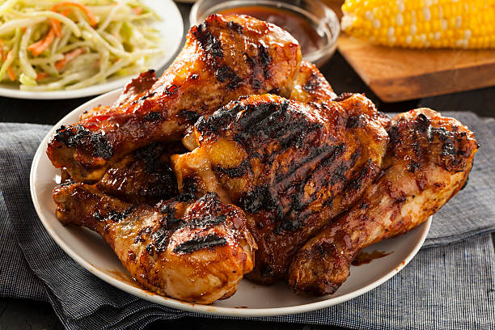

Chicken Barbecue

Description
This flavorful chicken entree can travel with you to your tailgate, picnic, or potluck. For one of the most delicious chicken recipes you'll ever bite into, marinate drumsticks in a citrus vinaigrette overnight and stir together a homemade sauce, then pack in an insulated cooler and grill up succulent barbecue chicken once you reach your site.
Ingredients
- 3 ½ - 4 ½ pound chicken drumsticks
- ½ cup lemon juice
- ¼ cup vegetable oil
- 4 cloves garlic, minced
- 1 ½ teaspoon salt
- 1 teaspoon freshly ground black pepper
- 1 cup water
- ⅓ cup coarsely chopped onion (1 small)
- 3 tablespoon butter
- 2 tablespoon packed brown sugar
- 1 tablespoon yellow mustard
- 1 tablespoon cider vinegar
- ⅛ teaspoon freshly ground black pepper
- 1 cup ketchup
- 3 tablespoon Worcestershire sauce
- 2 tablespoon lemon juice
- ⅛ teaspoon cayenne pepper(optional)
Steps
The day before:
- If desired, skin chicken. Divide chicken between two resealable plastic bags set in shallow dishes. For marinade, in a small bowl combine 1/2 cup lemon juice, oil, garlic, salt, and 1 teaspoon black pepper. Pour marinade over chicken. Seal bags; turn to coat chicken. Marinate in the refrigerator overnight, turning bags occasionally.
- Meanwhile, for barbecue sauce, in a large saucepan combine the water, onion, butter, brown sugar, mustard, vinegar, and 1/8 teaspoon black pepper. Bring to boiling; reduce heat. Simmer, uncovered, for 20 minutes. Stir in ketchup, Worcestershire sauce, 2 tablespoons lemon juice, and, if desired, cayenne pepper. Return to boiling; reduce heat. Simmer, uncovered, for 50 to 60 minutes or until desired consistency. Transfer to a storage container; cover and chill overnight.
Tailgate day:
- Drain chicken, discarding marinade. Tote chicken and barbecue sauce in an insulated cooler with ice packs.
- At the tailgating site, prepare grill (with a cover). For a charcoal grill, arrange medium-hot coals around a drip pan. Test for medium heat above pan. Place chicken on grill rack over drip pan. Cover and grill for 50 to 60 minutes or until chicken is tender and no longer pink (180°F). (For a gas grill, preheat grill. Reduce heat to medium. Adjust for indirect cooking. Grill as above.)
- Meanwhile, transfer barbecue sauce to a medium disposable foil pan. After chicken has been grilling about 20 minutes, add barbecue sauce to grill to reheat. Brush chicken frequently with barbecue sauce during the last 10 minutes of grilling. Serve chicken with the remaining barbecue sauce. Provide moist towelettes when serving.